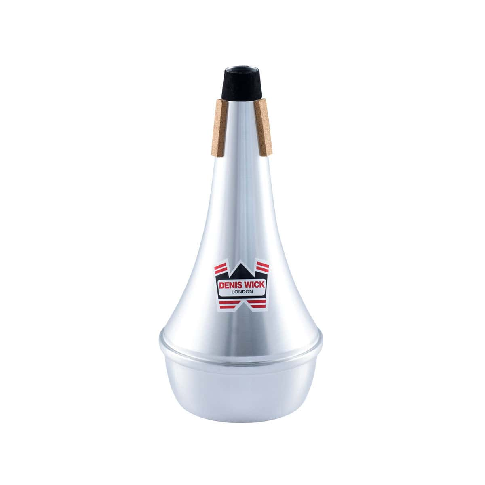
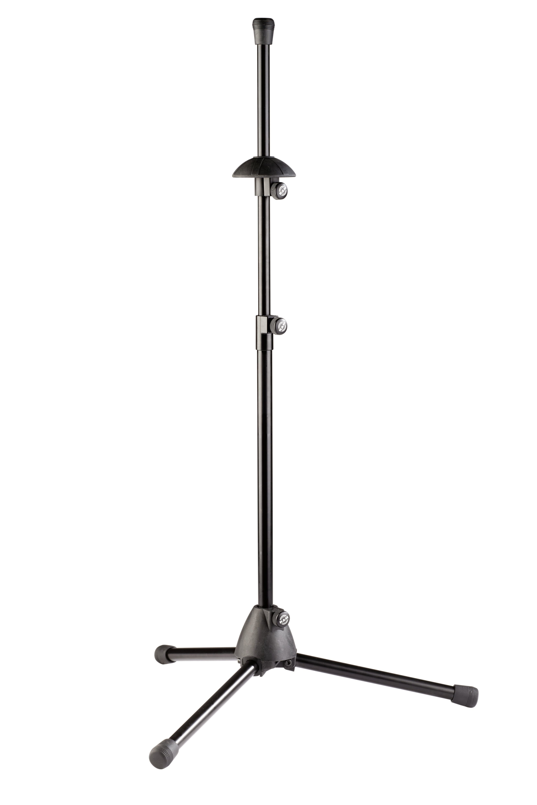

Trombones are awesome
Trombone is a brass instrument that's widely available in it's many forms in wind bands,
orchestras,
big band setups, ensembles, jazz compositions and many others.
A trombone and its accessories
A trombone held up in the rain

A traditional straight-mute

A trombone stand
A slide lubricant
The trombone is an instrument that takes years to master, however it's heavenly voice that can be
both sweet
and rough has a charm to it no other instrument has.
-Gergő, aspiring trombone player
Call to action